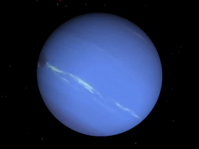

Video

"Neptune Rotation" by Kurdistan Planetarium
About Neptune
| Type | Ice Giant |
| Size(diameter) | 49,244 km, or about 4 Earths |
| Mass | 1.0 × 1026 kg, or about 17 Earths |
| Lenght of a year (orbital perior) | 165 years |
| Numbers of moons | 14 |
| Average distance from the Sun | 4.5 billion km |
| Temperature | Between -218 and -200 degrees Celsius |
Neptune
Due to being a gaseous planet, it lacks a landable surface, making the planet itself non-explorable. However, its moons offer a possible visit, where one can observe the planet's bluish color due to methane presence, as well as its rings and the dark spot on its visible surface. The main attraction lies in its moon called Triton, which, aside from showcasing the aforementioned views, features impressive geysers expelling nitrogen. Additionally, Triton is covered in ice.


![...]()
![...]()